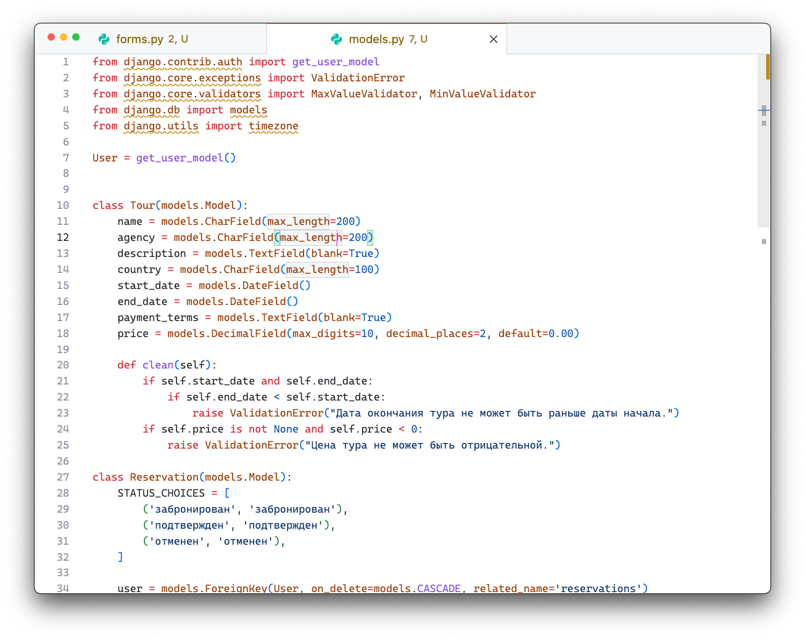
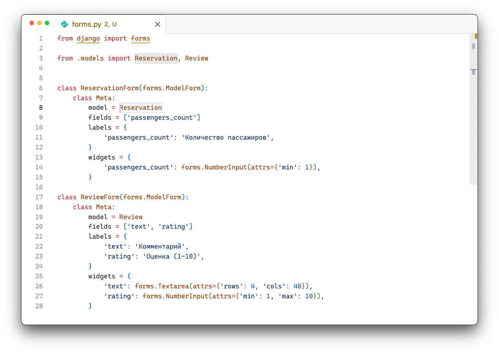
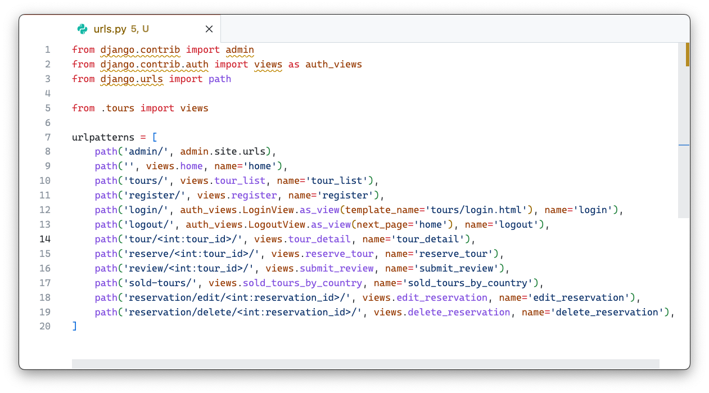
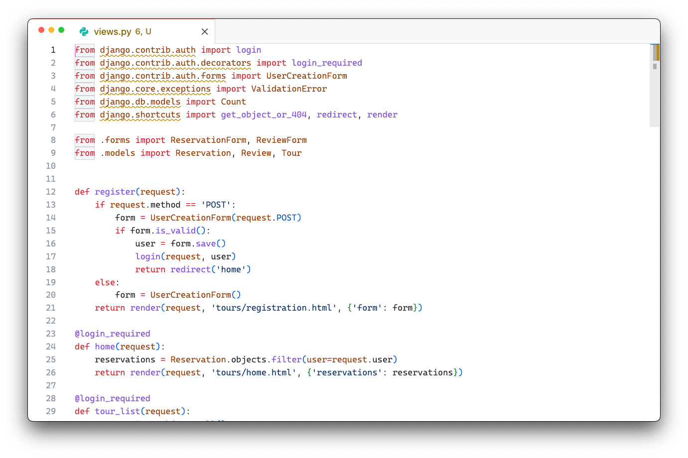
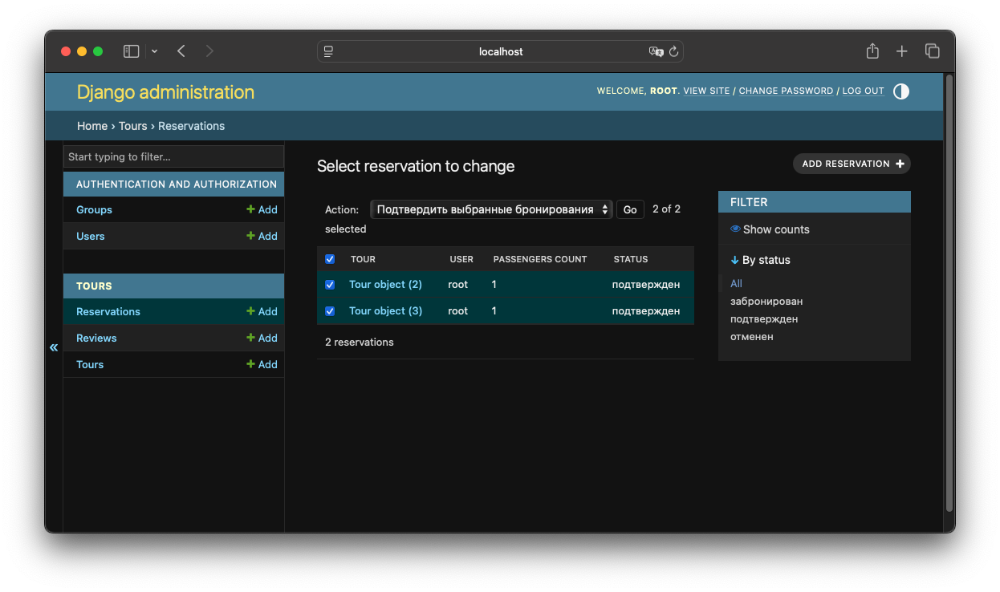

Лабораторная работа: Система туристических туров на Django
В этой лабораторной работе я разработал веб-приложение для туристической фирмы. Оно позволяет пользователям регистрироваться, просматривать доступные туры, резервировать их, оставлять отзывы и видеть статистику проданных туров по странам. Администратор может подтверждать бронирования через Django-admin.
Ход выполнения
Сначала я создал модели данных. Модель Tour хранит основную информацию о турах: название, турагентство, описание, страну проведения, даты начала и окончания, условия оплаты и цену. Модель Reservation отвечает за бронирование тура пользователем и содержит информацию о пользователе, туре, количестве пассажиров, статусе брони и датах создания и обновления. Модель Review хранит отзывы о турах, включая пользователя, тур, даты тура, текст комментария и рейтинг от 1 до 10. Были добавлены ограничения и валидаторы

После этого я сделал формы для работы с моделями. Форма ReservationForm содержит поле для количества пассажиров. Форма ReviewForm позволяет пользователю добавлять комментарий и оценку к туру.

Далее я реализовал пользовательский функционал. Регистрация новых пользователей проходит через стандартную форму Django UserCreationForm, а вход и выход осуществляются через встроенные представления LoginView и LogoutView. После авторизации пользователи могут просматривать список всех туров и переходить на страницу деталей конкретного тура, где отображаются отзывы и бронирования. Бронирование можно редактировать и удалять.
В сайте предусмотрены следующие ручки: главная страница отображается по адресу /, список всех туров — по /tours/, регистрация новых пользователей — по /register/. Для входа и выхода я использовал встроенные представления Django LoginView и LogoutView. Страницы деталей конкретного тура доступны по адресу /tour/<id>/, резервирование тура — /reserve/<id>/, добавление отзыва — /review/<id>/. Кроме того, я добавил маршруты для редактирования и удаления бронирований, а также для просмотра таблицы проданных туров по странам.

Рассмотрим представления. Для регистрации я сделал функцию register, которая обрабатывает POST-запрос с формой UserCreationForm. Если данные корректны, создаётся новый пользователь, и он автоматически логинится.
Главная страница (home) показывает пользователю все его бронирования. В функции tour_list я получаю список всех туров и передаю его в шаблон для отображения. Для просмотра деталей конкретного тура я сделал tour_detail, где показываются сама информация о туре, отзывы и существующие бронирования.
Для бронирования тура я сделал функцию reserve_tour. Она обрабатывает форму ReservationForm, проверяет корректность введённых данных через full_clean(), и если всё верно, сохраняет бронирование. Редактирование и удаление бронирований реализованы через edit_reservation и delete_reservation соответственно, с проверкой, что пользователь может менять только свои бронирования.
Добавление отзывов я реализовал в submit_review. При создании нового отзыва автоматически подставляются даты тура, а затем отзыв сохраняется вместе с текстом и рейтингом.
Для статистики проданных туров я написал sold_tours_by_country, где с помощью Django ORM агрегируются бронирования с подтверждённым статусом по странам. Полученные данные передаются в шаблон, где формируется таблица.

Для администратора я настроил Django-admin. Через панель администрирования можно подтверждать бронирования туров.
